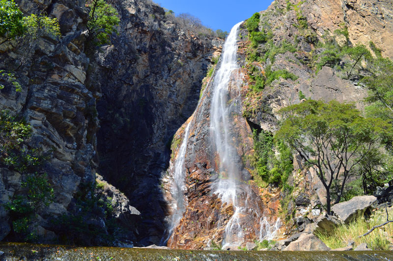

Parque Estadual Serra Nova
| Cachoeira do Serrado (Porteirinha) | Cachoeira do Serrado (Porteirinha) | Cachoeira do Serrado (Porteirinha) |
| Cachoeira do Serrado (Porteirinha) | Cachoeira do Serrado (Porteirinha) | Cachoeira do Serrado (Porteirinha) |
A vegetação predominante no Parque Estadual de Serra Nova são os campos rupestres, possuindo algumas árvores nativas como Jataipeba, Aroeira e Sucupira. Possui alguns pontos de mata fechada e a topografia bastante irregular, composta da Serra Geral e da Serra do Espinhaço, com regiões de grotas, morros e nascentes. O Parque abriga diversas nascentes, entre elas a do Ribeirão São Gonçalo e dos rios Ventania, Suçuarana, Bomba, Ladim e do Córrego da Velha. Infraestrutura O Parque possui as seguintes infraestruturas e equipamentos: Alojamentos com capacidade de 08 Pessoas Residência institucional; Guarita para recepção de visitantes; Quiosque, onde pode ser realizada reuniões; Ponto de Apoio no Gerais Santana com Capacidade de 9 Pessoas. Horário de Funcionamento A visitação acontece de8h00 às 17h00, todos os dias da semana. Recomenda-se entrada até as 15h00 no máximo. Como Chegar Ligar antes para obter informações, pois devido a existência de acessos por diferentes cidades, deve-se contatar a gerencia da UC para planejar a melhor portaria para chegar ao Parque e seus atrativos.